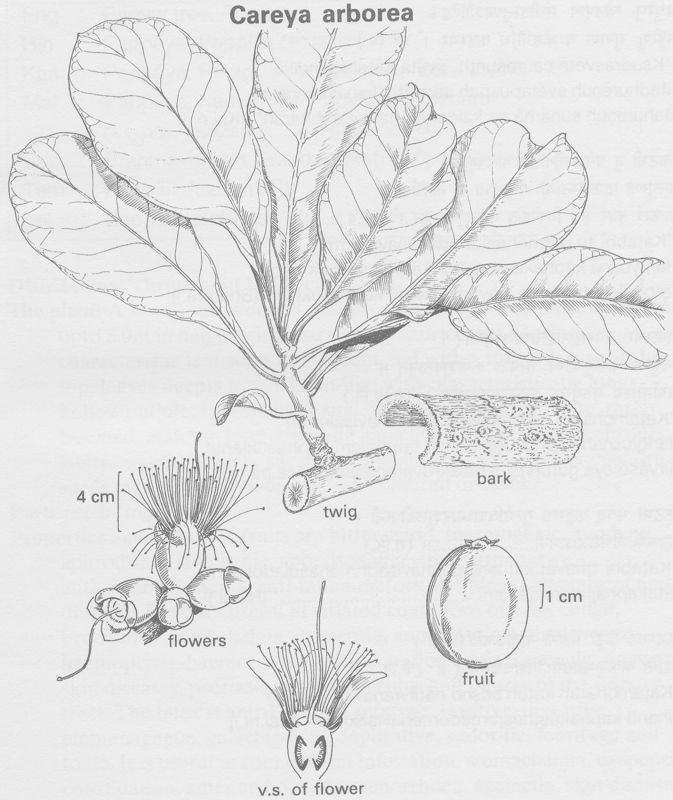

|
ECONOMICALLY
IMPORTANT PLANTS OF INDIA |
| Under-utilized Food and Fodder species and their wild relatives | Contributed by Ms.M.L Annapurna And Dr. Dhanapal, UAS, Bangalore |
Careya arborea Roxb.
----- Taxonomic
Details

----- Correct Name
----- Classification
----- Synonyms
----- Common Names
Other Biological Details
----- Habit and Habitat
----- Diagnostic Features
----- Reproductive Biology
---------- Breeding System
---------- Phenology
---------- Pollinators
---------- Seed Biology
-----------Seed Germination
------ Cultivation
----- Major Pests and Diseases
Economic Potential and Uses
----- Parts Used
----- Uses
----- Harvesting Practices
----- Produce and Products
----- Chemistry
----- Processing Techniques
----- Other uses
----- Economic Potential to the
Country
----- Export Potential
Miscellaneous Information
Literature
DIAGNOSTIC
FEATURES
Decidous tree, 5-15 m ; leaves obovate two oblanceolate cuneate at base,
short-acuminate or obtuse, crenualte at margins, 15-30x8-20 cm.;lateral nerves
10-15 pairs;pestioles 1-3 cm, margin or wind upwards; flowers 6-8 cm
across,white or pale pink in terminal few flowered, stick spikes; brachets
3,unequal;linear; filaments purple;berries globose or ovoid 6-7 cm, greenish
yellow;seeds many, immersed in pulp,+- 1 cm diameter.
Breeding System :
Phenology :
Flowering and Fruiting occurs during Mar.-Aug.
Pollinators:
Seed Biology :
Seed Germination :
Cultivation:
MAJOR PESTS &
DISEASES
Pests:
Diseases:
Parts used:
Bark,Fruit.
Uses:
1. Both bark and fruits are used as astringent,demulcent,antidote for snake-bite.
Harvesting
Practices
Produce and Products
2.Bedi, S.J. (1978). Ethnobotany of the Ratan Mahal Hills, Gujarat, India. Econ. Bot. 32: 278-284.
3.Chaudhuri, Rai H.N., Pal, D.C., Tarafder, C.R. (1975). Less known uses of some plants from the tribal areas of Orissa. Bull. Bot. Surv. India 17: 132-136.
4.Das, S.N., Janardhanan, K.P., Roy, S.C. (1983). Some observations on the ethnobotany of the tribes of Totopara and adjoining areas in Jalpaiguri district, West Bengal. J. Econ. Tax. Bot. 4: 453-474.
5.Jain, S.K. (1965). Medicinal plantlore of the tribals of Bastar. Econ. Bot. 19: 236-250.
6.Flora of Jowai,N.P.Balakrishna Vol 1,Botanical Survey Of India,1981,pp.201-202.